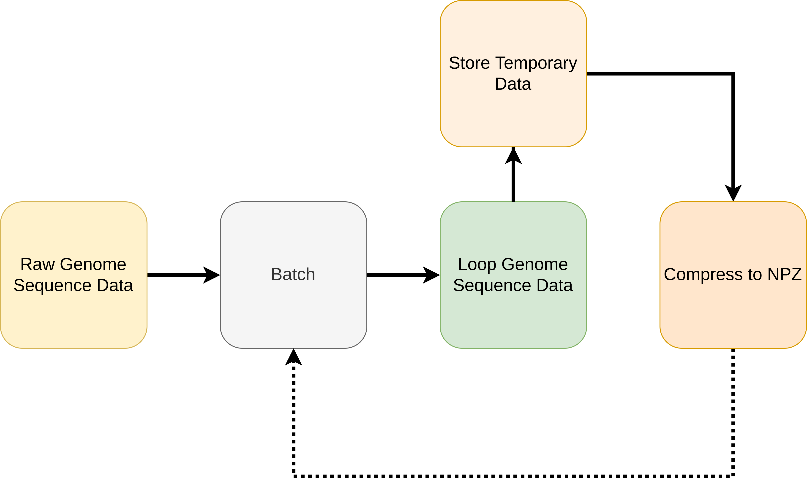

Preprocessing¶

>>> python -m genolearn --help
usage: __main__.py [-h] [-batch_size BATCH_SIZE] [-verbose VERBOSE] [-n_processes N_PROCESSES] [-sparse SPARSE] [-dense DENSE] [-debug DEBUG]
[--not_low_memory]
output_dir genome_sequence_path
Processes a gunzip (gz) compressed text file containing genome sequence data of the following sparse format
feature_id_1 | sample_id_1:value_1_1 sample_id_2:value_1_2 ...\n
feature_id_2 | ...
into a gunzip compressed text file which contains a matrix. The ij-th element of the matrix refers to the value at the
i-th feature and j-th sample i.e. value_i_j at feature_id_i, sample_id_j.
Required Arguments
=======================
output_dir : output directory
genome_sequence_path : path to compressed text file with sparse format
Optional Arguments
=======================
batch_size = 512 : number of temporary txt files to generate over a single parse of the genome data
verbose = 250000 : number of iterations before giving verbose update
n_processes = 'auto' : number of processes to run in parallel when compressing txt to npy files
sparse = True : output sparse npz files
dense = True : output dense npz files
debug = -1 : integer denoting first number of features to consider (-1 results in all features)
Optional Flags
=======================
--not_low_memory : if flagged, will write to temporary txt files before converting to npz files, otherwise, will consume RAM to then generate the npz files
Example Usage
=======================
python -m genolearn data raw-data/STEC_14-19_fsm_kmers.txt.gz --batch_size 256
positional arguments:
output_dir
genome_sequence_path
optional arguments:
-h, --help show this help message and exit
-batch_size BATCH_SIZE
-verbose VERBOSE
-n_processes N_PROCESSES
-sparse SPARSE
-dense DENSE
-debug DEBUG
--not_low_memory